earmark.nvim, feature by feature
The idea. earmark lets you label spans of text in Neovim with colours, the way you would
mark up a printed page with highlighters. Labels are numbered (and can be named), so 3ghiw means
"mark this word with label 3".
Marks stay on the text. Edit around them, reformat the file, change it in another program, undo:
each annotation stays on its words. If the words themselves are rewritten it is marked stale; if they
are deleted it is detached and kept, so nothing is silently lost.
Notes on labels. Any annotation can carry a Markdown note with #tags; a small hover shows it
when the cursor rests there, and pickers, the quickfix list and a Markdown export find it again.
How to read the clips. The blue bar at the top says what the clip shows. The box under the editor
shows a note for the current step and, on the yellow line, the keys as they are typed, one at a time
(<leader> is Space). Each step waits a moment before the keys, so you can read the note, and
holds the result a few seconds; the keys stay up until the next step starts. Every clip uses
earmark's default settings unless its card says otherwise. Boxes marked like this one call out a default
you are asked to confirm:
Default to confirm (item N): … (the numbers are the list at the end of the README, under "Status").
Try it yourself. Run make demo in the repository, then
cd /tmp/earmark-demo/proj && nvim -u ../init.lua notes/essay.md (open the other files with
:e notes/fresh.md and :e notes/changed.md). It is the same project the clips were recorded
in, with the same theme; nothing from your own config is loaded. Run make demo again to reset it.
59 demonstrations, in the order of the README:
Annotate
Marking text with a label: the operator gh, with or without a count.
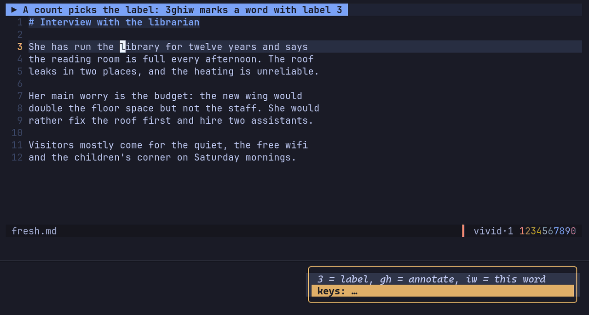
GIF · MP4 · still
What you are looking at: The word "library" turns label 3's colour; then a whole line segment takes label 12. The statusline swatch at the bottom right shows the label the next gh uses.
Why it matters: This is the fast path: the count is the label, so marking text is one motion, like any Vim operator.
Default key: gh is the operator (it replaces Select mode's gh).
Try it yourself in
notes/fresh.md:
- put the cursor on "library" /library<CR>
- label 3 on the word 3ghiw
- next line, start j0
- label 12 to the end of the line 12gh$
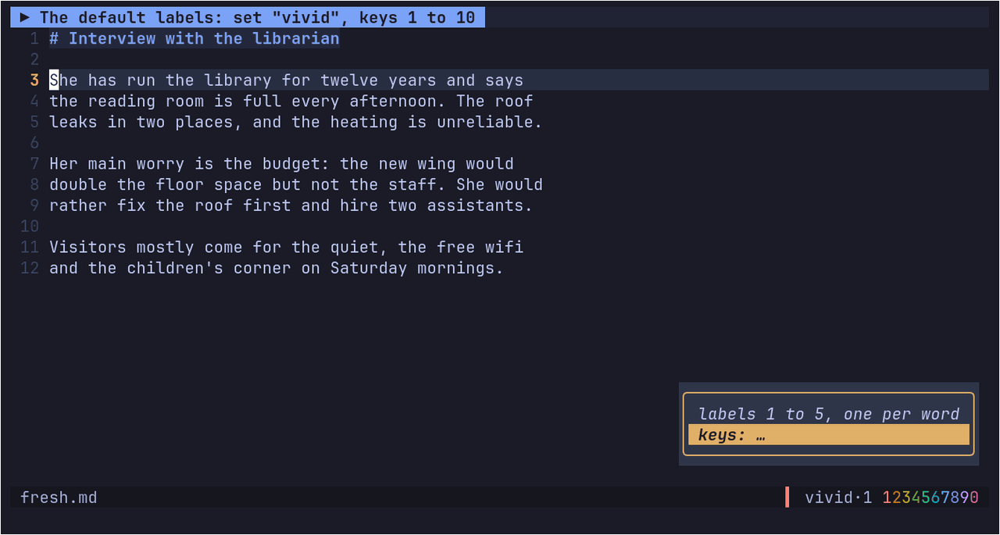
GIF · MP4 · still
What you are looking at: Labels 1 to 10 of the default set "vivid", one per word. The digits 1234567890 in the statusline use the same colours, so you can see which number is which colour.
Why it matters: You pick labels by number, so the colours have to be easy to tell apart.
Default: five generated sets (vivid, pastel, earth, metal, cyber), the same on any background (item 6 of the defaults you are asked to confirm: no per-background palettes).
Try it yourself in
notes/fresh.md:
- line 3 3G0
- labels 1 to 5 1ghiww2ghiww3ghiww4ghiww5ghiw
- labels 6 to 10 w6ghiww7ghiww8ghiww9ghiww10ghiw
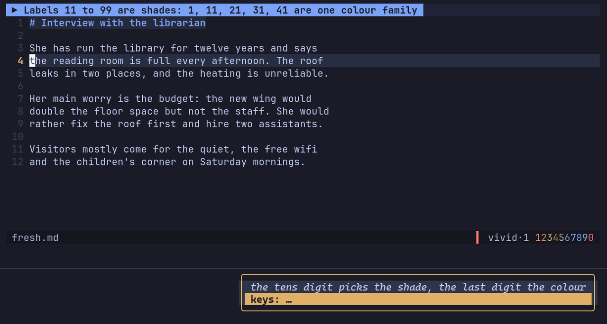
GIF · MP4 · still
What you are looking at: Five words with labels 1, 11, 21, 31 and 41: one colour family in different shades. The last digit picks the colour, the tens digit the shade.
Why it matters: Ninety-nine labels without ninety-nine unrelated colours.
Try it yourself in
notes/fresh.md:
- line 4 4G0
- labels 1, 11, 21, 31, 41 1ghiww11ghiww21ghiww31ghiww41ghiw
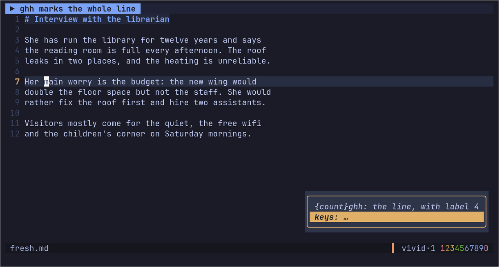
GIF · MP4 · still
What you are looking at: The whole line takes label 4.
Why it matters: Quicker than gh$ from the start of the line.
Default key: ghh. (Typed slowly, Neovim waits timeoutlen before running it.)
Try it yourself in
notes/fresh.md:
- line 7 7G
- label 4 on the line 4ghh
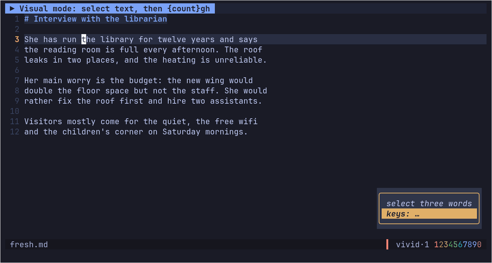
GIF · MP4 · still
What you are looking at: Three selected words become one annotation with label 6.
Why it matters: For spans that no motion describes well.
Try it yourself in
notes/fresh.md:
- on "the library" /the library<CR>
- select three words v3e
- label 6 6gh
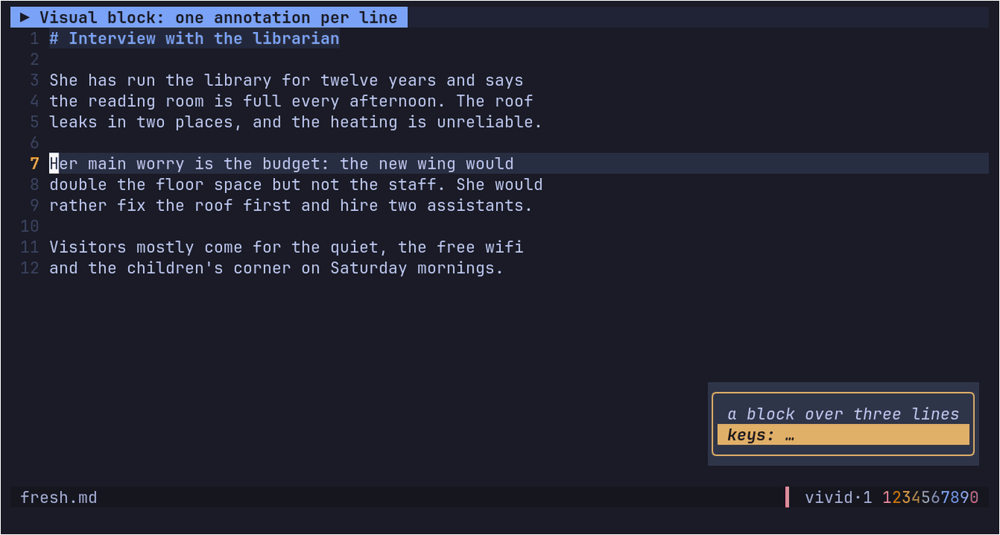
GIF · MP4 · still
What you are looking at: Three separate annotations, one per line of the block.
Why it matters: Columns and lists.
Try it yourself in
notes/fresh.md:
- line 7, start 7G0
- a block over three lines <C-v>jj3e
- label 2 2gh
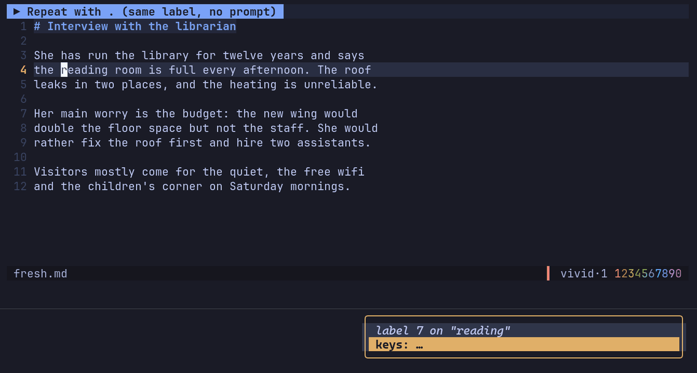
GIF · MP4 · still
What you are looking at: Each . marks another word with the same label, no prompt.
Why it matters: Marking a run of things the same way.
Try it yourself in
notes/fresh.md:
- on "reading" /reading<CR>
- label 7 7ghiw
- two words on, repeat ww.
- again w.
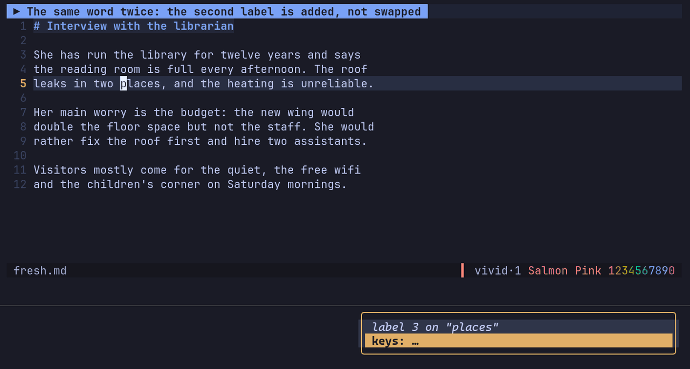
GIF · MP4 · still
What you are looking at: The second label is added to the annotation (it shows as an overlap); repeating a label it already has does nothing. The hover lists both.
Why it matters: This is the old complaint about overlapping highlights on one word: both labels stay visible.
Default to confirm (item 13): another label on exactly the same span is added, not swapped; <leader>ml swaps.
Try it yourself in
notes/fresh.md:
- on "places" /places<CR>
- label 3 3ghiw
- label 5 on the same word 5ghiw
- label 5 again 5ghiw
- rest on it l
The label prompt
gh without a count opens a small prompt beside the text.
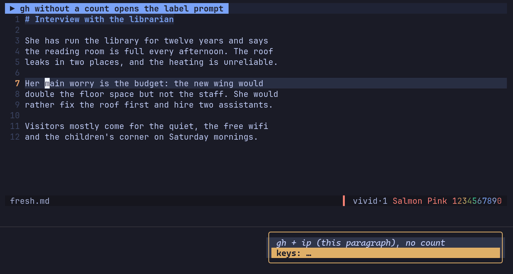
GIF · MP4 · still
What you are looking at: The prompt opens beside the paragraph. Typing 12 recolours the paragraph live and lists 12 and its shades; Enter applies it. Because 12 is new in this project, it then asks for a name; Esc skips that.
Why it matters: You see the colour on your text before you commit to it.
Default to confirm (item 7): gh without a count always opens the prompt.
Try it yourself in
notes/fresh.md:
- line 7 7G
- open the prompt on the paragraph ghip
- type a key 12
- apply <CR>
- skip naming <Esc>
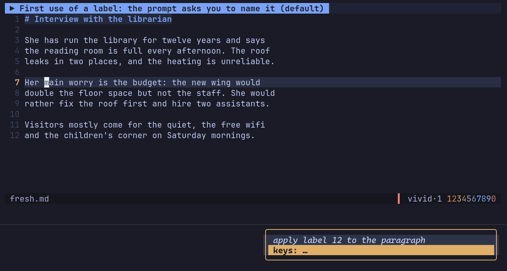
GIF · MP4 · still
What you are looking at: After Enter the prompt switches to "12 name"; typing staffing and Enter names label 12. The hover then shows the name.
Why it matters: Numbers are hard to remember; names are matched when you type in the prompt and shown in the hover, pickers and export.
Default to confirm (item 1): prompt.ask_name = 'first_use' asks the first time a label is used in a project, and that name then applies in the project's other files (item 12: .earmark/names.json is committed).
Try it yourself in
notes/fresh.md:
- line 7 7G
- label 12 on the paragraph ghip12<CR>
- type a name staffing
- save the name <CR>
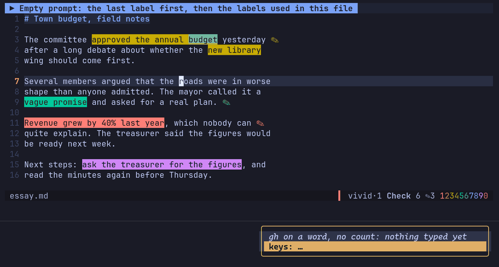
GIF · MP4 · still
What you are looking at: With nothing typed, the list starts with the last label used, then the labels already used in this file, with their names and how often they are used. Enter applies the first.
Why it matters: Re-using the label you just used is one key.
Default to confirm (item 7): Enter on empty input re-uses the last label.
Try it yourself in
notes/essay.md:
- on "roads" /roads<CR>
- open the prompt ghiw
- apply the first candidate <CR>
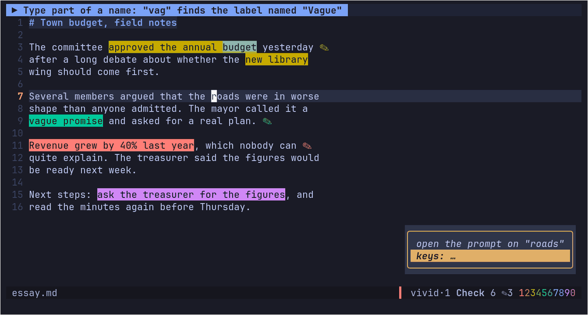
GIF · MP4 · still
What you are looking at: "vag" narrows the list to label 5, named "Vague".
Why it matters: Find labels by what they mean, not by number.
Try it yourself in
notes/essay.md:
- on "roads" /roads<CR>
- open the prompt ghiw
- type part of a name vag
- apply <CR>
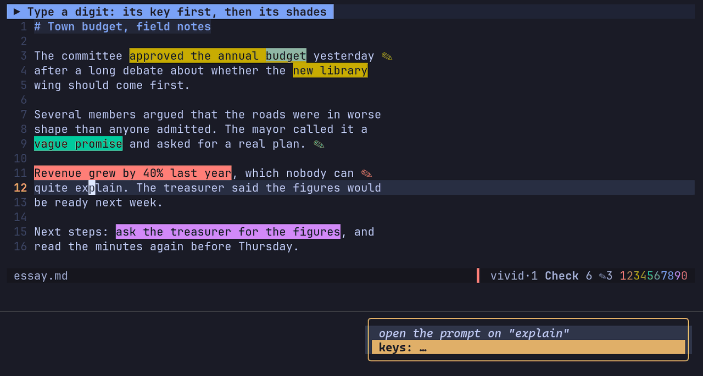
GIF · MP4 · still
What you are looking at: Typing 3 lists 3, then 13, 23, 33 and so on; Ctrl-n moves down and the text follows the selection.
Why it matters: Browse a colour family without remembering numbers.
Try it yourself in
notes/essay.md:
- on "explain" /explain<CR>
- open the prompt ghiw
- type 3 3
- move down twice <C-n><C-n>
- apply, skip naming <CR><Esc>
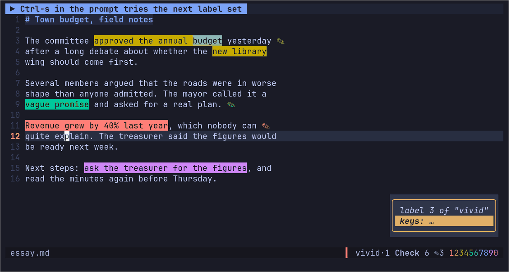
GIF · MP4 · still
What you are looking at: The prompt title changes from vivid to pastel to earth, and the text shows label 3 of each.
Why it matters: Compare sets without leaving the prompt.
Try it yourself in
notes/essay.md:
- on "explain" /explain<CR>
- label 3 ghiw3
- next set, twice <C-s><C-s>
- apply <CR><Esc>
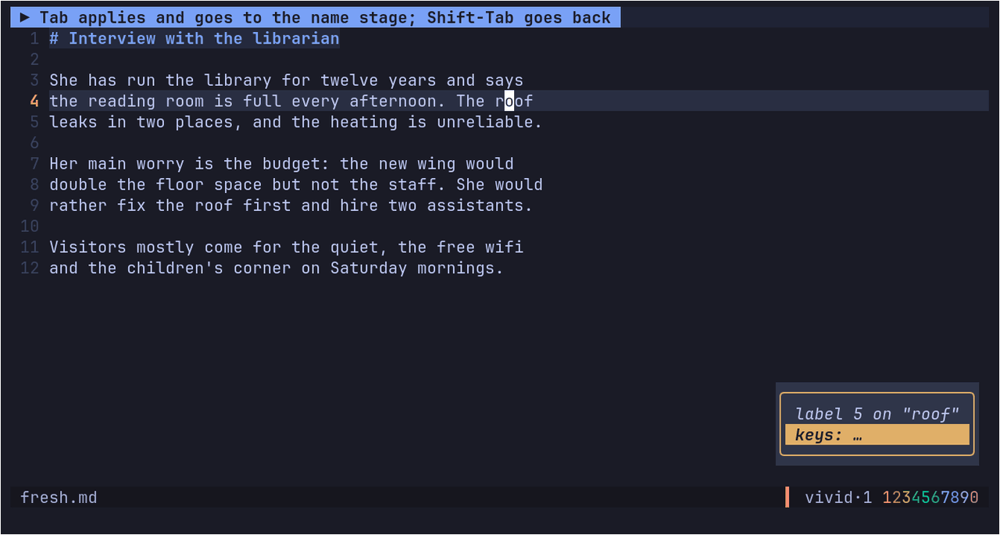
GIF · MP4 · still
What you are looking at: Tab applies the label and moves to the name stage; Shift-Tab goes back to choosing the label.
Why it matters: Name a label in the same breath as using it.
Try it yourself in
notes/fresh.md:
- on "roof" /roof<CR>
- label 5 ghiw5
- name stage <Tab>
- back <S-Tab>
- cancel <Esc><Esc>
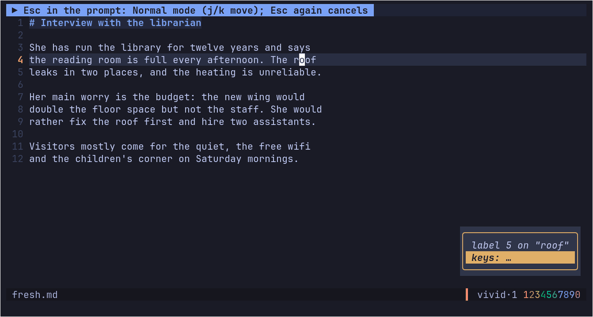
GIF · MP4 · still
What you are looking at: After Esc, j/k move through the candidates; a second Esc closes the prompt and the word is left unmarked.
Why it matters: Vim keys work in the prompt, and cancelling never leaves a half-made annotation.
Try it yourself in
notes/fresh.md:
- on "roof" /roof<CR>
- label 5 ghiw5
- Normal mode <Esc>
- move jj
- cancel <Esc>
Change and erase
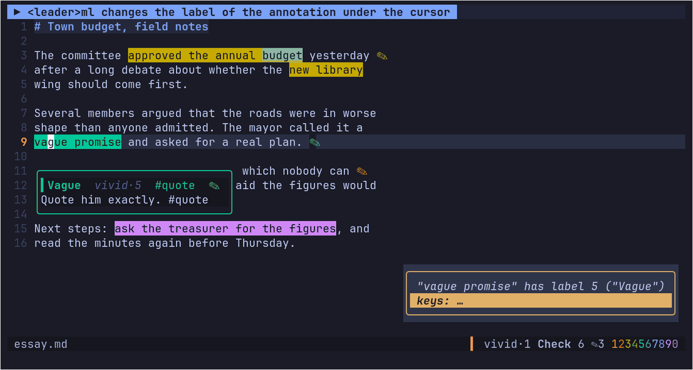
GIF · MP4 · still
What you are looking at: "vague promise" changes from label 5 ("Vague") to label 2.
Why it matters: Fix a mislabel without erasing.
Default key: <leader>ml (a count picks among overlapping annotations).
Try it yourself in
notes/essay.md:
- on "vague promise" /vague<CR>
- change the label <leader>ml
- to 2 2<CR>
- skip naming <Esc>
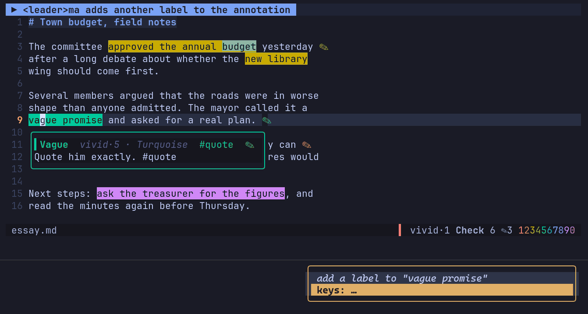
GIF · MP4 · still
What you are looking at: The second label shows as an undercurl in its colour under the text; the hover lists both labels.
Why it matters: One phrase can be two things at once (vague and a quote).
Default to confirm (item 3): a second label is an undercurl; labels 3 and up are small squares after the span.
Try it yourself in
notes/essay.md:
- on "vague promise" /vague<CR>
- add a label <leader>ma
- label 6 6<CR><Esc>
- rest on it jk
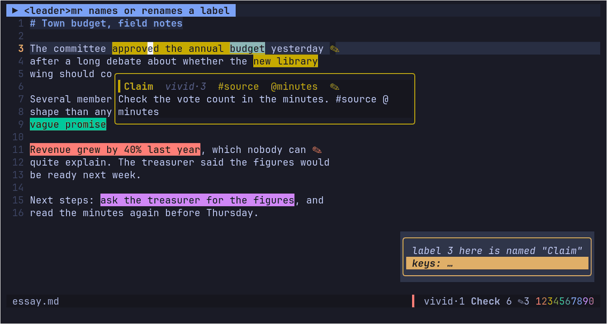
GIF · MP4 · still
What you are looking at: Label 3 was "Claim"; after renaming, both label-3 annotations show "Disputed".
Why it matters: Names belong to the label in this file, so one rename updates every use.
Try it yourself in
notes/essay.md:
- on "approved" /approved<CR>
- rename <leader>mr
- clear the old name <C-u>
- new name Disputed<CR>
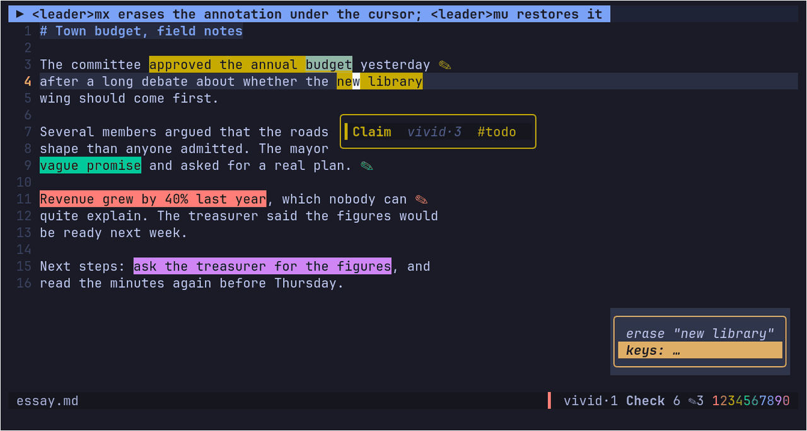
GIF · MP4 · still
What you are looking at: "new library" loses its colour, then gets it back.
Why it matters: Erasing is safe: the last batch comes back.
Try it yourself in
notes/essay.md:
- on "new library" /new library<CR>
- erase <leader>mx
- restore <leader>mu
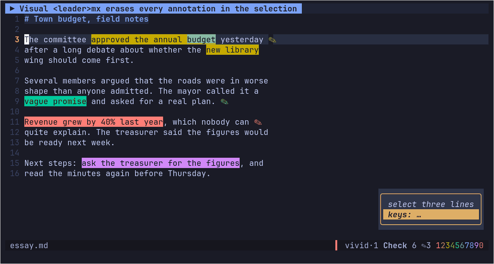
GIF · MP4 · still
What you are looking at: Every annotation in the selected lines disappears, then comes back.
Why it matters: Clear an area at once.
Try it yourself in
notes/essay.md:
- line 3 3G
- select three lines Vjj
- erase <leader>mx
- restore <leader>mu
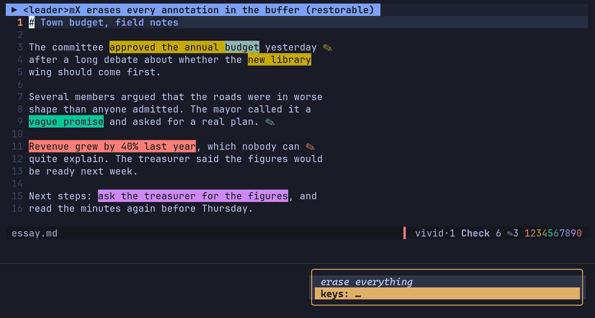
GIF · MP4 · still
What you are looking at: All annotations go, then all come back.
Why it matters: Start over without losing work for good.
Try it yourself in
notes/essay.md:
- erase all <leader>mX
- restore <leader>mu
Move around and find
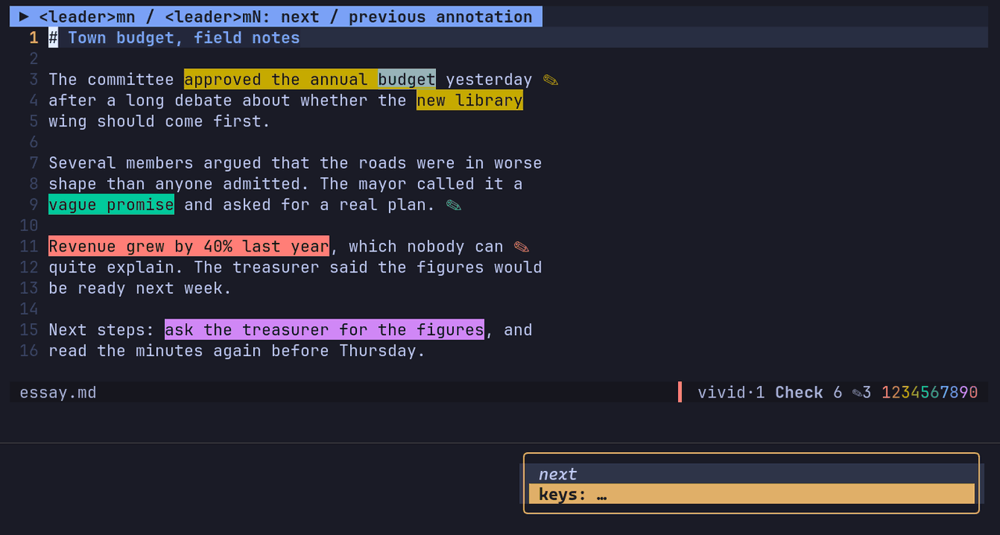
GIF · MP4 · still
What you are looking at: The cursor jumps from annotation to annotation.
Why it matters: Read through your marks in order. Wraps at the ends.
Try it yourself in
notes/essay.md:
- top of the file gg
- next, next <leader>mn<leader>mn
- previous <leader>mN
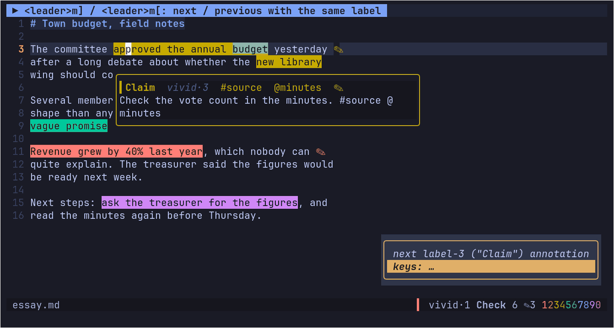
GIF · MP4 · still
What you are looking at: From "approved the annual budget" (label 3) to "new library" (also 3), then back.
Why it matters: Walk through every "Claim" and skip the rest.
Try it yourself in
notes/essay.md:
- on "approved" /approved<CR>
- next with this label <leader>m]
- again (wraps) <leader>m]
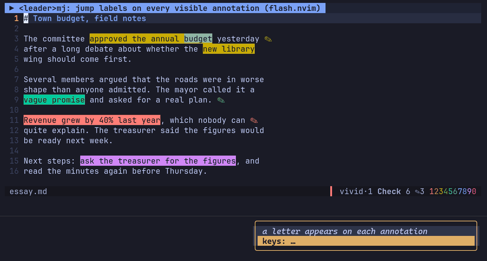
GIF · MP4 · still
What you are looking at: flash.nvim puts a letter on each visible annotation; typing one jumps there.
Why it matters: Two keystrokes to any mark on screen. Without flash.nvim this opens the picker.
Try it yourself in
notes/essay.md:
- show jump labels <leader>mj
- jump to the 3rd d
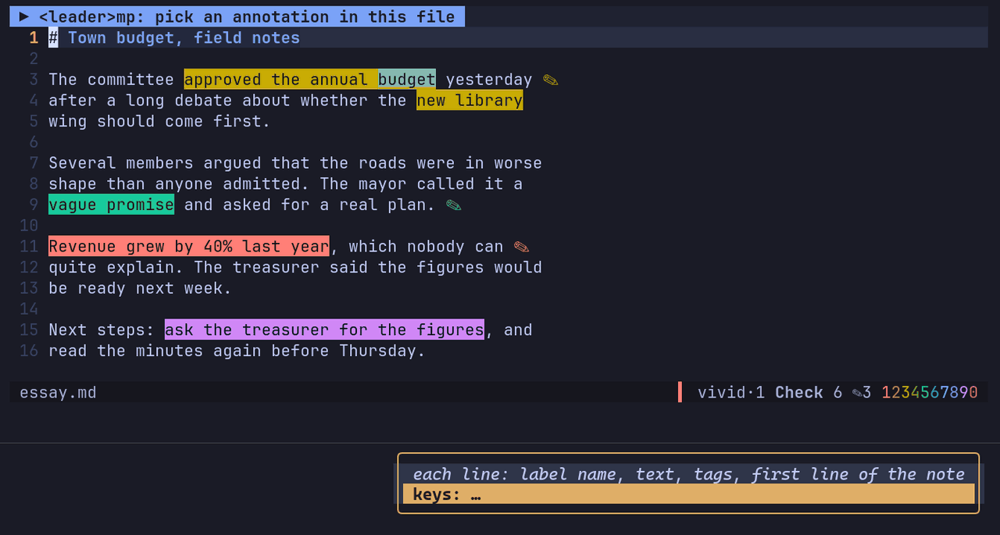
GIF · MP4 · still
What you are looking at: Each line shows the label name, the text, its tags and the first line of its note; typing filters.
Why it matters: Find an annotation by what you wrote about it.
Default: picker = 'auto' (snacks.nvim here, then telescope, else vim.ui.select).
Try it yourself in
notes/essay.md:
- open the picker <leader>mp
- filter by tag #todo
- jump <CR>
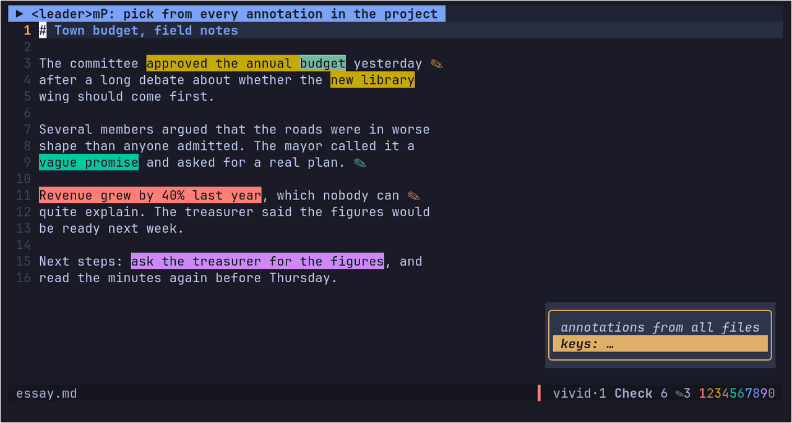
GIF · MP4 · still
What you are looking at: Annotations from every file in the project; choosing one opens its file.
Why it matters: Search all your notes at once.
Try it yourself in
notes/essay.md:
- open the project picker <leader>mP
- filter votes
- open it <CR>
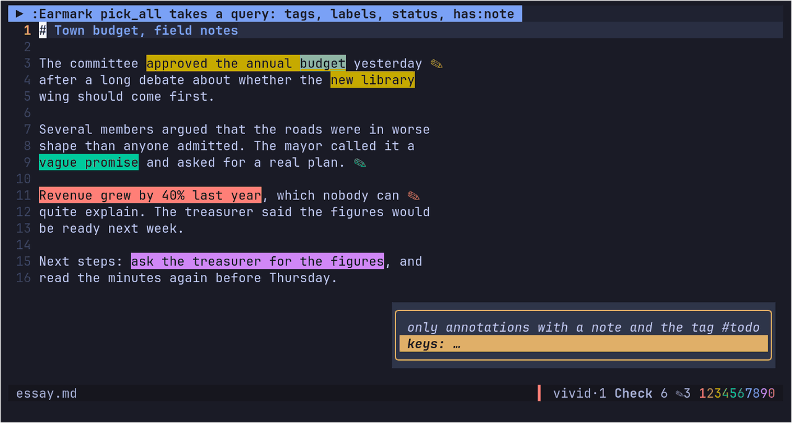
GIF · MP4 · still
What you are looking at: Only annotations that have a note and the tag #todo.
Why it matters: Query words: #tag, @ident, label:, set:, status:ok|stale|ambiguous|detached, has:note, has:tags, or any text.
Try it yourself in
notes/essay.md:
- pick with a query :Earmark pick_all has:note #todo<CR>
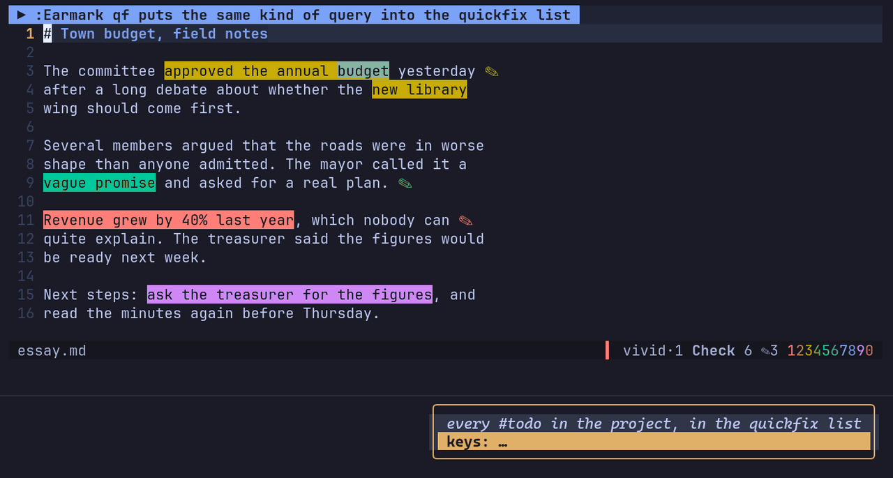
GIF · MP4 · still
What you are looking at: Every #todo in the project, as quickfix entries.
Why it matters: Use :cnext and friends across files.
Try it yourself in
notes/essay.md:
- query into quickfix :Earmark qf all #todo<CR>
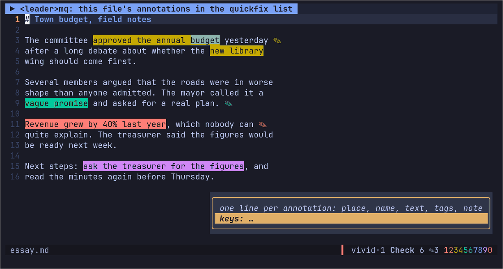
GIF · MP4 · still
What you are looking at: One quickfix line per annotation: position, name, text, tags and note.
Why it matters: A plain list you can keep open.
Try it yourself in
notes/essay.md:
- quickfix <leader>mq
When the text changes
Annotations stay attached when the text is edited, reformatted or changed outside Neovim. When the annotated text itself is rewritten, the annotation is stale; when it is gone, detached, never dropped.
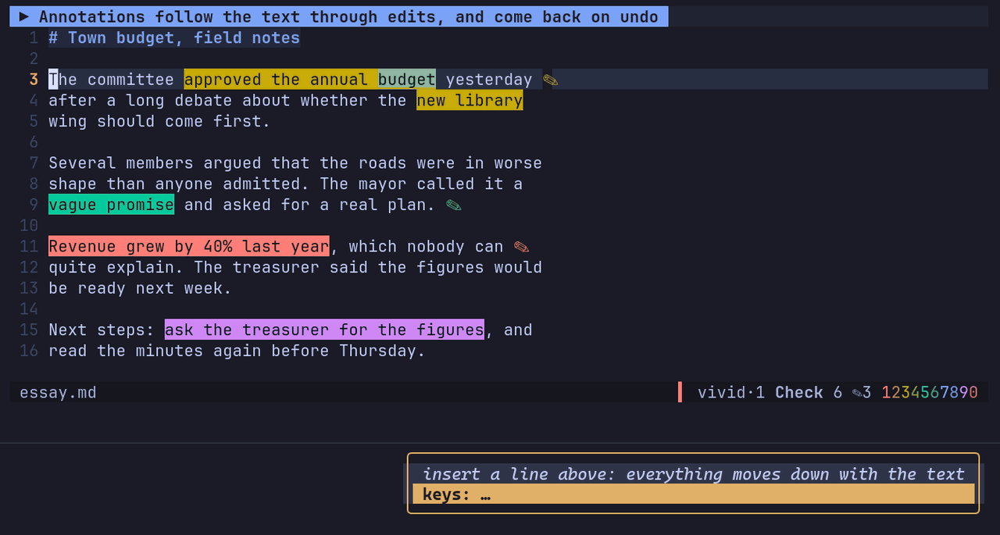
GIF · MP4 · still
What you are looking at: Annotations move down with the text; deleting the line removes its highlight; undo brings it back.
Why it matters: Highlights that break on every edit are useless; these follow the text.
Try it yourself in
notes/essay.md:
- on line 3 3G
- insert a line above OA new first line.<Esc>
- delete an annotated line jdd
- undo u
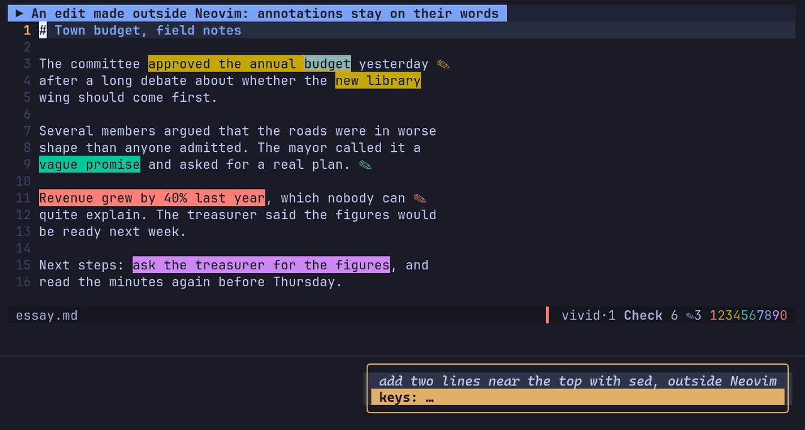
GIF · MP4 · still
What you are looking at: The file was changed behind Neovim's back, then reloaded with :e. Every annotation moves down with its words; nothing is left behind at the old places.
Why it matters: Formatters, git checkouts and other editors change files under you; the marks follow the text.
Default to confirm (item 8): text snapshots in .earmark/snap/ are gitignored, so a fresh clone re-anchors by quote and context only.
Try it yourself in
notes/essay.md:
- add two lines near the top with sed :!sed -i '2a The council met late on Tuesday.\n' %<CR>
- reload :e<CR>
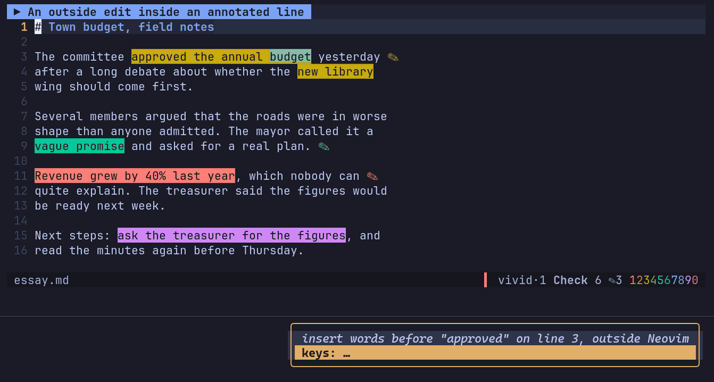
GIF · MP4 · still
What you are looking at: Words are added in front of the annotation on the same line. After :e the highlights are still on "approved the annual budget" and "budget", not at the old columns.
Why it matters: Re-anchoring works by the words, not by line and column.
Try it yourself in
notes/essay.md:
- insert words before "approved" with sed :!sed -i 's/The committee approved/After midnight, the committee finally approved/' %<CR>
- reload :e<CR>
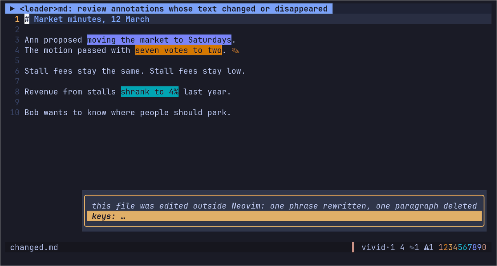
GIF · MP4 · still
What you are looking at: notes/changed.md was annotated, then edited outside Neovim: "grew by 40%" became "shrank to 4%" (stale) and the parking paragraph was deleted (detached). The list shows both; choosing one offers jump, compare, accept, attach or erase.
Why it matters: Nothing is silently lost: you decide what happens to each.
Try it yourself in
notes/changed.md:
- open the review list <leader>md
- choose the first <CR>
- Compare <C-n><CR>
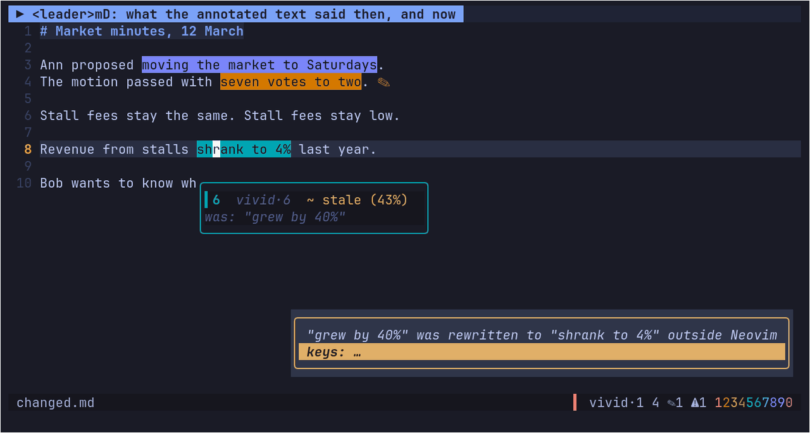
GIF · MP4 · still
What you are looking at: A float: what the text said when you annotated it, and what it says now, with the changed characters marked.
Why it matters: See whether your note still applies.
Try it yourself in
notes/changed.md:
- on "shrank" /shrank<CR>
- compare <leader>mD
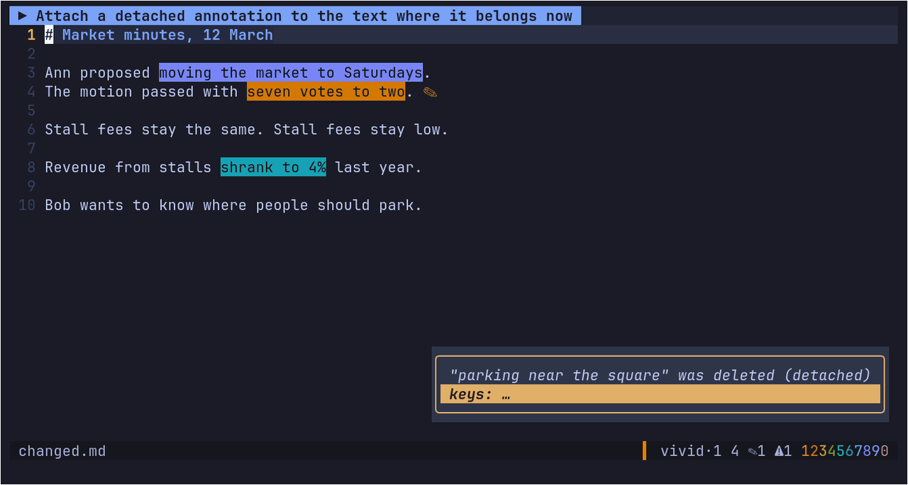
GIF · MP4 · still
What you are looking at: The deleted annotation is given the new sentence about parking; the ⚠ in the statusline goes away.
Why it matters: Keep a note and labels when the text was rewritten elsewhere.
Try it yourself in
notes/changed.md:
- review list <leader>md
- choose "parking" parking<CR>
- "Attach it to a selection" selection<CR>
- on "where" /where<CR>
- select to the end v$h
- attach <leader>mR
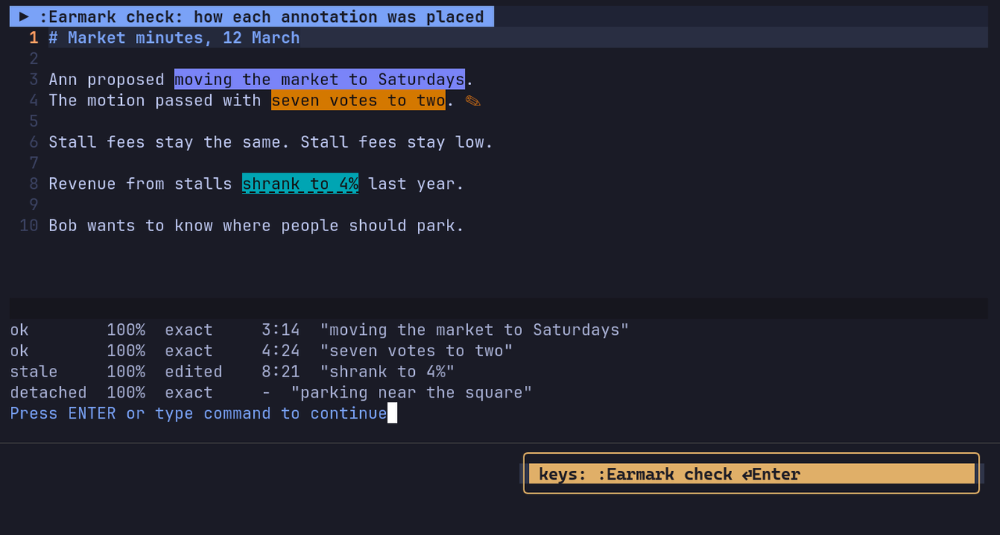
still
What you are looking at: How each annotation was placed: ok/stale/detached, how sure, and where.
Why it matters: Also works headless in scripts (exit status 1 if any is detached).
Try it yourself in
notes/changed.md:
- check :Earmark check<CR>
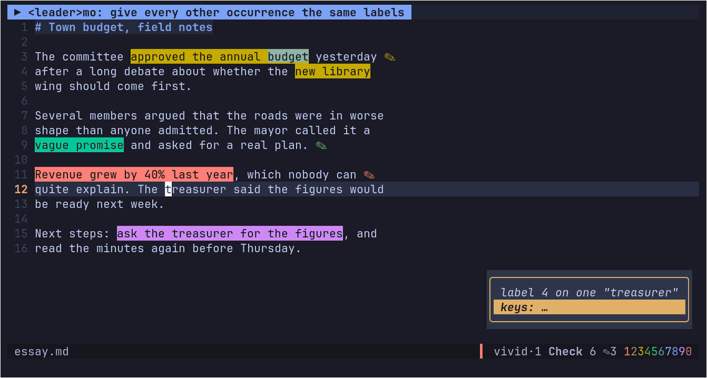
GIF · MP4 · still
What you are looking at: The other "treasurer" on line 15 gets label 4 too.
Why it matters: Mark a name everywhere it appears.
Behaviour to confirm: <leader>mo has no one-step undo (erase the extra ones with <leader>mx).
Try it yourself in
notes/essay.md:
- on "treasurer" (line 12) 12G/treasurer<CR>
- label 4 4ghiw
- the other occurrences <leader>mo
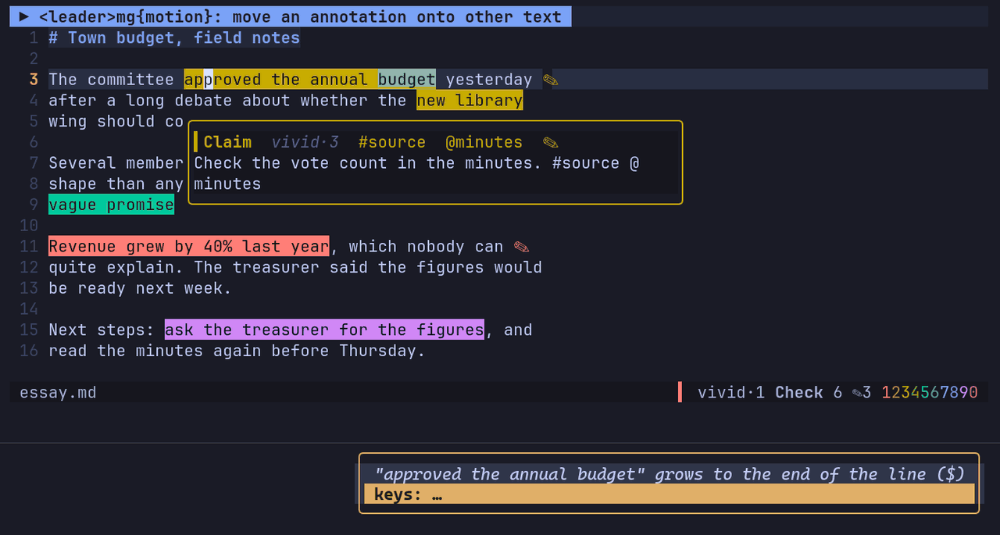
GIF · MP4 · still
What you are looking at: "approved the annual budget" becomes "approved the annual budget yesterday"; its note, name and labels stay.
Why it matters: Fix the extent of a mark without redoing it.
Behaviour to confirm: <leader>mg accepts the new text as the annotation's text.
Try it yourself in
notes/essay.md:
- on "approved" /approved<CR>
- grow it to the end of the line <leader>mg$
Label sets
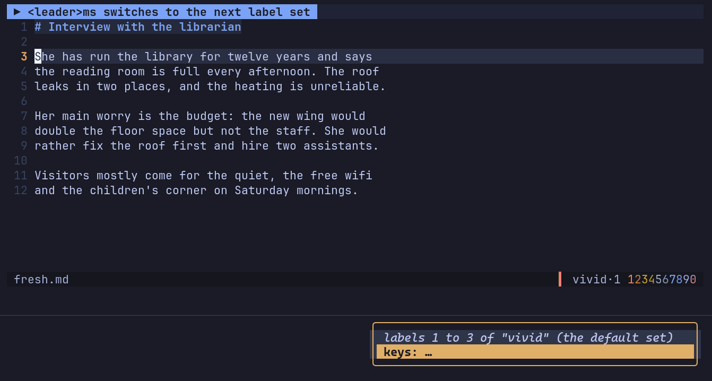
GIF · MP4 · still
What you are looking at: A popup shows the new set's colours; the same counts now give pastel colours, and the earlier words keep vivid.
Why it matters: Different sets for different jobs, switched in one key.
Try it yourself in
notes/fresh.md:
- line 3 3G0
- labels 1-3 1ghiww2ghiww3ghiw
- next set <leader>ms
- labels 1-3 again w1ghiww2ghiww3ghiw
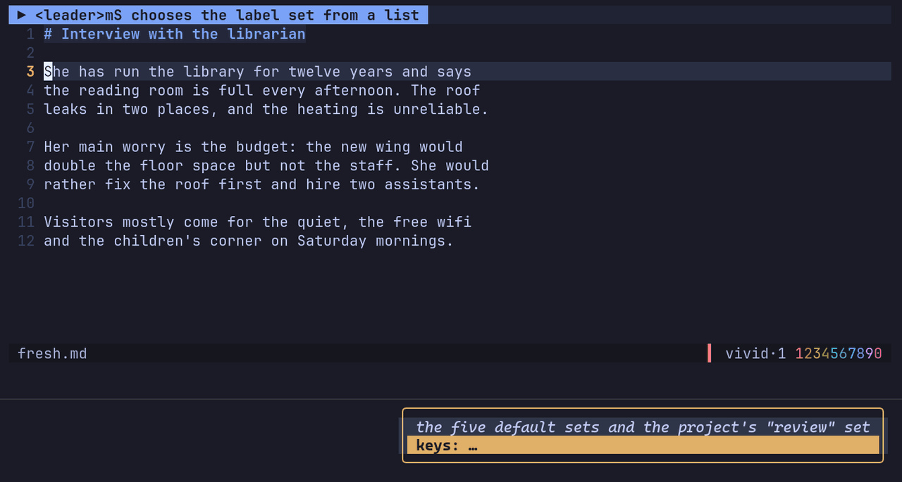
GIF · MP4 · still
What you are looking at: The five default sets plus the project's own "review" set; after choosing "cyber" the statusline digits change.
Why it matters: Jump straight to the set you want.
Try it yourself in
notes/fresh.md:
- set list <leader>mS
- choose cyber cyber<CR>
- labels 1-3 1ghiww2ghiww3ghiw
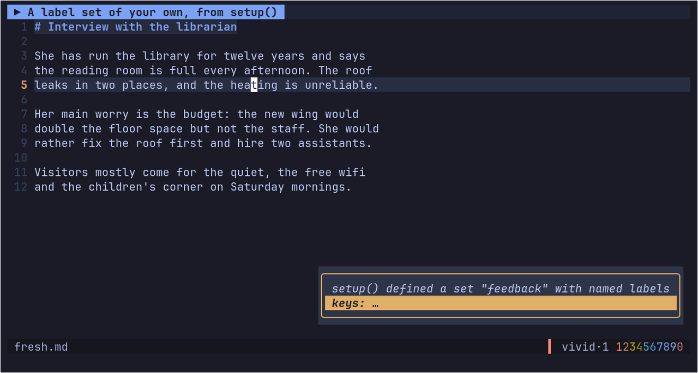
GIF · MP4 · still
What you are looking at: A set "feedback" with labels "contradiction", "vague" and "cut this" (keys c, v, 3); the prompt matches names. Recorded with sets = { 'vivid', feedback = { labels = { { key = 'c', name = 'contradiction', color = '#e06c75' }, { key = 'v', name = 'vague' }, 'cut this' } } }.
Why it matters: Labels with meaning for your own workflow.
Try it yourself in
notes/fresh.md:
- start with the option EARMARK_DEMO_OPTS="{ sets = { 'vivid', feedback = { labels = { { key = 'c', name = 'contradiction', color = '#e06c75' }, { key = 'v', name = 'vague' }, 'cut this' } } } }" nvim -u ../init.lua notes/fresh.md
- choose it <leader>mSfeedback<CR>
- on "heating" /heating<CR>
- prompt ghiw
- by name cut<CR>
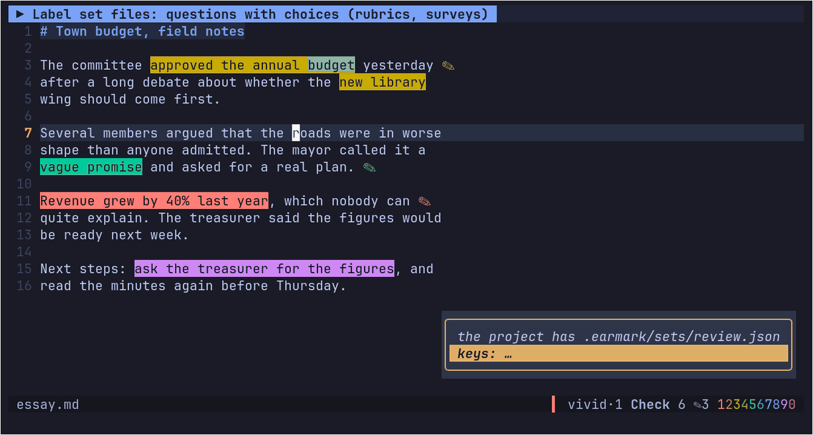
GIF · MP4 · still
What you are looking at: The project file .earmark/sets/review.json defines q1 "Accuracy" with choices; "Minor issue" asks for a line of text. The hover shows Accuracy · b Minor issue and the text.
Why it matters: Rubrics, surveys and structured review, not just colours.
Behaviour to confirm: set files are reloaded by checking their modification time on focus and buffer switches.
Try it yourself in
notes/essay.md:
- choose the project's set <leader>mSreview<CR>
- on "roads were in" /roads<CR>
- prompt gh3e
- q1 Accuracy <CR>
- "Minor issue" <C-n><CR>
- the text should say bridges<CR>
- look <Esc>l
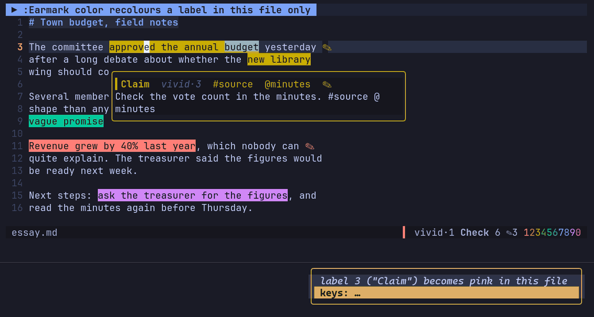
GIF · MP4 · still
What you are looking at: Label 3 turns pink in this file only, then back.
Why it matters: Fix a colour clash in one document.
Try it yourself in
notes/essay.md:
- on "approved" /approved<CR>
- recolour :Earmark color #ff79c6<CR>
- undo it :Earmark color reset<CR>
Notes and the hover
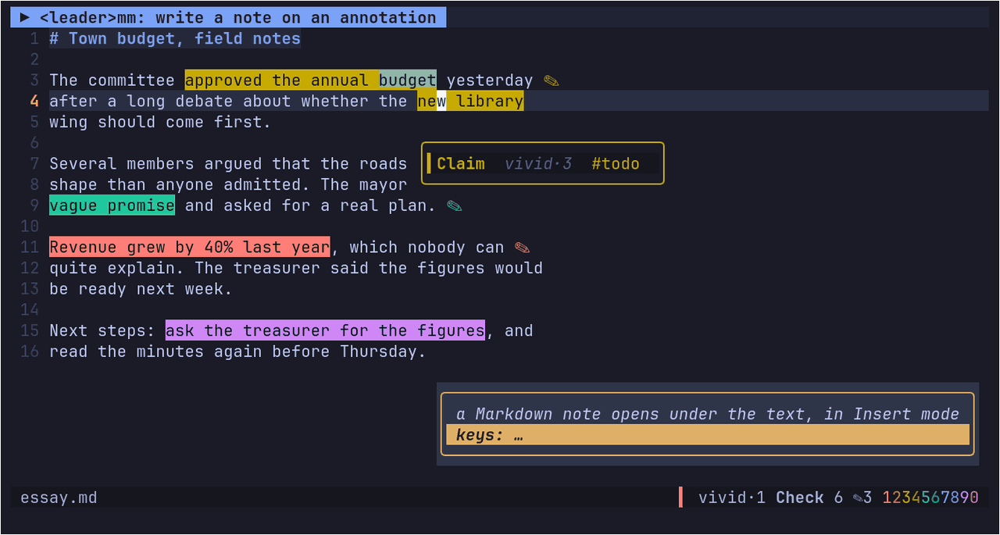
GIF · MP4 · still
What you are looking at: The note opens under the text in Insert mode; q saves. A pencil ✎ appears at the end of the line and the hover shows the note.
Why it matters: Your thoughts sit on the text they are about.
Default: note.layout = 'float'.
Try it yourself in
notes/essay.md:
- on "new library" /new library<CR>
- open the note <leader>mm
- type Ask when the wing was first proposed. #todo @council
- save <Esc>q
- rest on it h
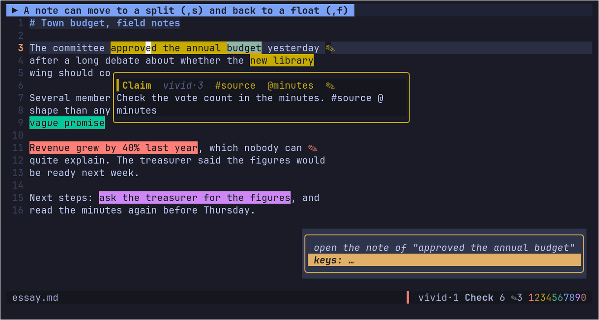
GIF · MP4 · still
What you are looking at: The note moves to a split at the bottom and back to the float.
Why it matters: Longer notes get room.
Try it yourself in
notes/essay.md:
- on "approved" /approved<CR>
- open the note <leader>mm
- to a split ,s
- back ,f
- close q
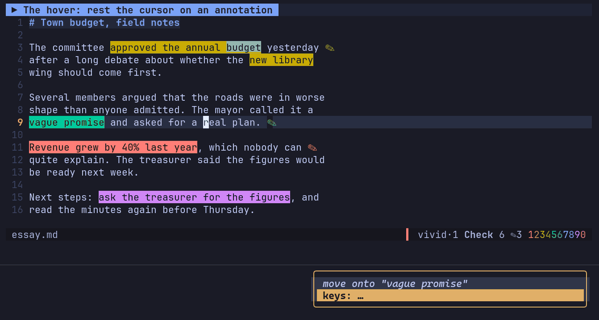
GIF · MP4 · still
What you are looking at: Resting on an annotation with a name, note or tags shows a float with the label name (in its colour), tags and note, without taking focus; it goes away when you leave.
Why it matters: See what you wrote without opening anything.
Default to confirm (item 4): the header is the label colour as text (▍ name), not a filled bar. Shown for annotations with a name or note (hover.show_when = 'named_or_note').
Try it yourself in
notes/essay.md:
- on "vague promise" /vague<CR>
- move off and back jjkk
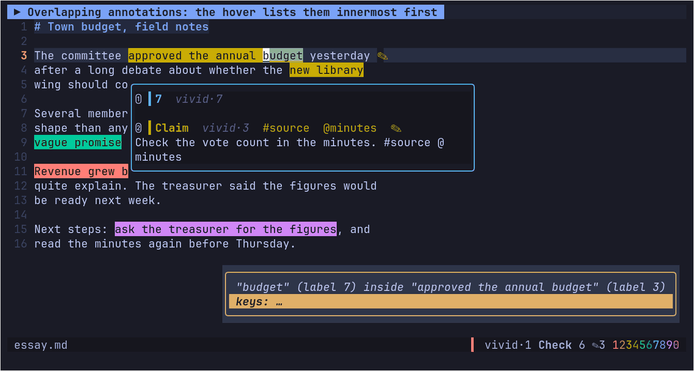
GIF · MP4 · still
What you are looking at: "budget" (label 7) sits inside "approved the annual budget" (label 3): the hover lists both, innermost first (①, ②).
Why it matters: When marks overlap you can still read each one.
Try it yourself in
notes/essay.md:
- on "budget" (line 3) 3G/budget<CR>
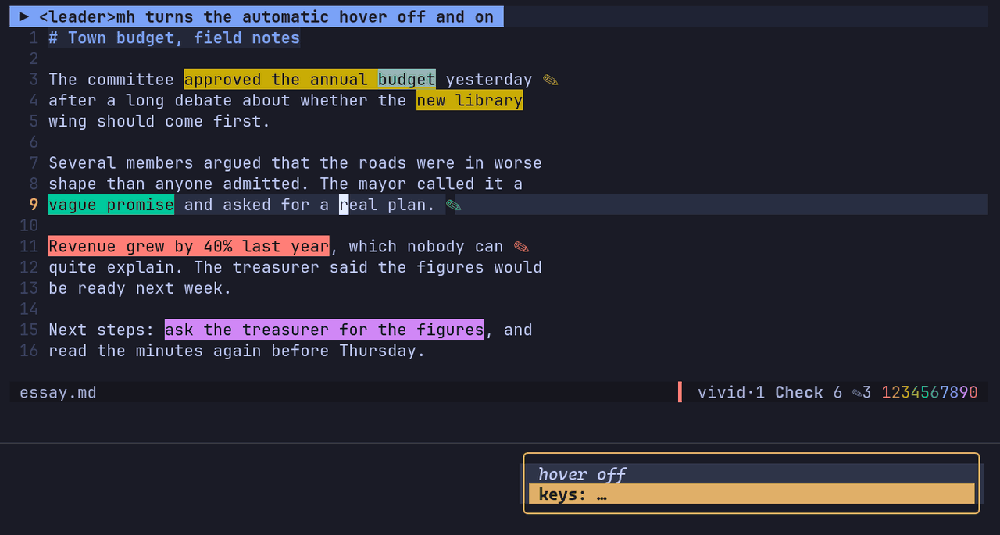
GIF · MP4 · still
What you are looking at: With the hover off, resting on the annotation shows nothing.
Why it matters: Quiet reading when you want it.
Try it yourself in
notes/essay.md:
- on "vague promise" /vague<CR>
- off <leader>mh
- move jjkk
- on <leader>mh
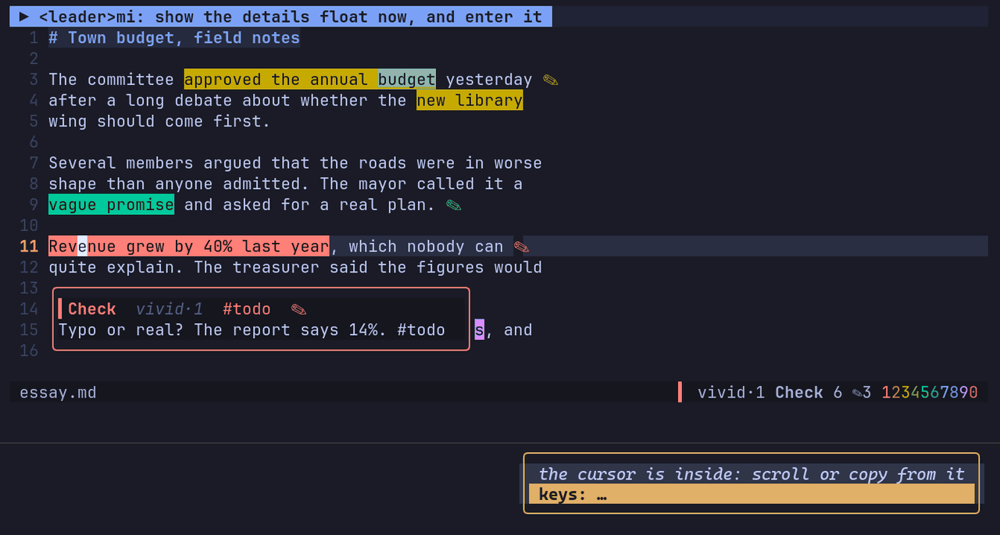
GIF · MP4 · still
What you are looking at: The details float opens at once and the cursor goes inside it to scroll or copy.
Why it matters: Long notes.
Try it yourself in
notes/essay.md:
- on "Revenue" /Revenue<CR>
- details <leader>mi
- close q
GIF · MP4 · still
What you are looking at: The list of every tag you have used; choosing one adds it. With <leader>mv the tags appear at the end of the line.
Why it matters: Group marks across files (#todo, #source ...) and find them with the picker.
Try it yourself in
notes/essay.md:
- on "vague promise" /vague<CR>
- tags <leader>mt
- toggle todo todo<CR>
- done <Esc>
- show tags <leader>mv
Indicators
GIF · MP4 · still
What you are looking at: A ✎ for each note at the end of its line, in the label's colour. <leader>mv adds the #tags and @identifiers (as [minutes]); nothing goes in the sign column.
Why it matters: You can see where notes are without hovering.
Defaults to confirm (items 2 and 5): @A in notes shows as [A]; tags and identifiers are hidden at startup, pencils always show.
Try it yourself in
notes/essay.md:
- show tags <leader>mv
- hide them <leader>mv
What overlaps look like
Still pictures; the zoomed crop shows the lines that matter at twice the size.
still
What you are looking at: See the legend under the picture.
Why it matters: Overlapping marks on the same words are all visible and you can tell where each starts and ends.
Default to confirm (item 3): mixed colours with the outer colour as underline; second label undercurl; labels 3+ as squares (not a gradient or interleave).
Try it yourself in
notes/fresh.md:
- line 3: "the library for" /the library<CR>v3e2gh
- "library" inside it w5ghiw
- line 4: "reading room is" /reading<CR>4gh3e
- "room is", then "room" w4gh2e4ghiw
- line 5: four labels on "leaks" 5G06ghiw3ghiw8ghiw9ghiw
- line 7: rewrite "budget" /budget<CR>7ghiwciwmoney<Esc>
still
What you are looking at: The same annotations with blending off.
Why it matters: The alternative to the default, for comparison.
Try it yourself in
notes/fresh.md:
- start with the option EARMARK_DEMO_OPTS="{ overlap = { style = 'top' } }" nvim -u ../init.lua notes/fresh.md
- then the same keys as above
still
What you are looking at: Every default Normal-mode mapping, as Neovim lists it.
Why it matters: The full set of defaults in one place.
Defaults to confirm: all of keys = { ... } in the README's Configure section.
Try it yourself in
notes/essay.md:
- list them :filter /earmark/ nmap<CR>
still
What you are looking at: See the legend under the picture.
Why it matters: The current label and the state of the file at a glance.
Default to confirm (item 9): the next label, counts, the warning count and the digit row.
Try it yourself in
notes/changed.md:
- look at the bottom right
still
What you are looking at: What earmark found: Neovim version, storage, optional plugins.
Why it matters: First stop when something looks wrong.
Try it yourself in
notes/essay.md:
- run it :checkhealth earmark<CR>
Storage and export
GIF · MP4 · still
What you are looking at: An unnamed buffer with an annotation is thrown away and reopened with its text and annotation.
Why it matters: Quick notes in throwaway buffers are kept.
Try it yourself in
notes/fresh.md:
- new buffer :enew<CR>
- type icall the plumber after lunch.<Esc>
- annotate 0w3gh2e
- throw it away :bwipeout!<CR>
- reopen :Earmark scratch<CR><CR>
GIF · MP4 · still
What you are looking at: A Markdown file with every annotation grouped by label (with names), each with text, lines, tags and note, opened in a split.
Why it matters: Share or archive your annotations outside Neovim.
Default to confirm (item 11): exports go to <root>/.earmark/export/<project>-<path>.md (gitignored).
Try it yourself in
notes/essay.md:
- export <leader>me
- accept the path <CR>
Not shown
- zk (
<leader>mz): the zk program is not installed on this laptop, so zk-nvim cannot create notes. - API and events: Lua functions for other plugins; nothing to see on screen.
- Ambiguous annotations (underdotted): the demo project doesn't produce one.
- JSON-only storage (item 10): nothing to see: records are plain JSON in
.earmark/docs/.
Re-record: python3 docs/demos/scripts/record.py [clip ...] (needs agentwin, ghostty,
ffmpeg), then python3 docs/demos/scripts/page.py.